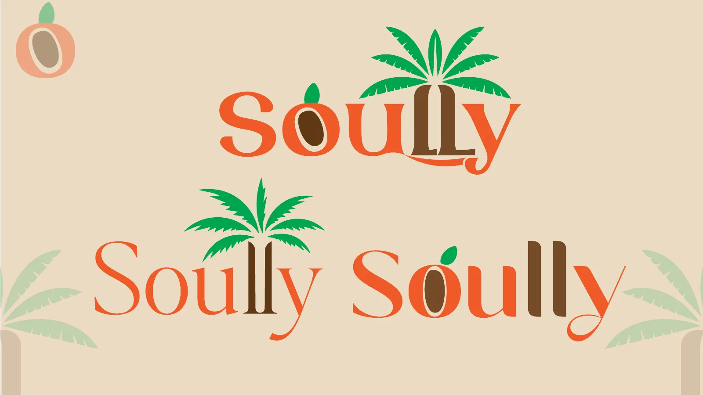

Selected projects01 / 06
Soully
Brand Identity & Packaging
Soully is a premium dates brand. This case study follows the logo and its concept, the colour and type choices, and the packaging and product applications.
- Role
- Brand identity, packaging design
- Scope
- Logo, colour system, typography, packaging, brand applications
- Typefaces
- Laviossa Medium, Andor
Concept
Three ideas, one wordmark.
- 01
Date
The O is crafted as a ripe date fruit with a visible seed.
- Natural purity and wholesomeness.
- The core ingredient of the brand.
- Unprocessed, nutritious snacking.
- 02
Date palm tree
The double L transforms into a date palm trunk, topped with vibrant leaves.
- The origin of the product: Gulf region date palms.
- Farm-fresh authenticity and cultural depth.
- The brand’s roots in nature and tradition.
- 03
Flow curve
The flowing line under the wordmark is the soul of the design.
- Wholesome flow: smooth texture and natural sweetness.
- A smile: the joy of guilt-free snacking.
- A touch of Middle Eastern elegance and movement.
Date. Palm. Flow.
Exploration
One logo, four grounds.
The wordmark is shown on beige, cream, black and white, in full colour and in a single colour.
The same wordmark was also explored in four colourways.


Colour system
- Orange#F05A28
- Brown#603813
- Green#00A551
Typography
Laviossa Medium and Andor.
Two typefaces carry the brand. The wordmark was drawn in more than one style before the final form.

Packaging
Stand-up pouches in four flavours.
Orange, Cinnamon, Chocolate and Classic.
The front carries the logo, the variant and a product window. The artwork is built from palms, dunes and dates.


Applications
The identity carried across a rigid gift box and business cards.